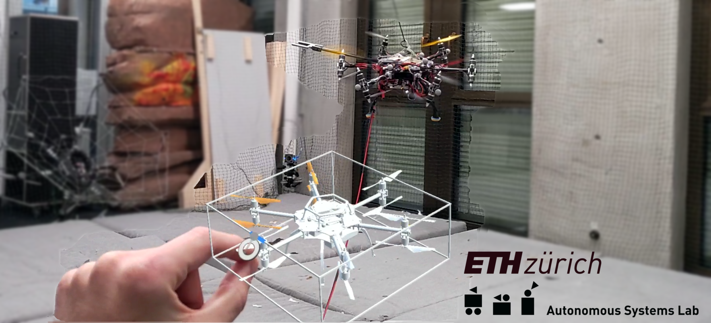
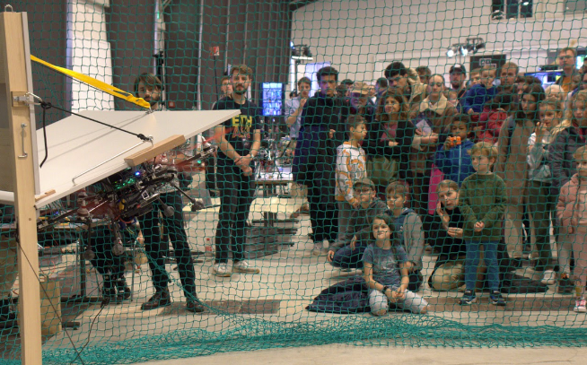
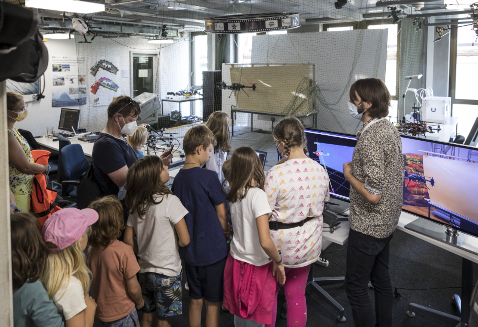

Publications
Books

|
K. Bodie, M. Brunner, M. Allenspach; Omnidirectional Tilt-Rotor Flying Robots For Aerial Physical Interaction; Springer, 2024 | |
I am currently a PhD student at the Autonomous Systems Lab (ASL) at ETH Zürich, Switzerland, under the guidance of Prof. Roland Siegwart. My work at ASL spans design, system identification, state estimation, control, and planning for omnidirectional aerial vehicles in the context of aerial manipulation.
My research specifically aims to facilitate the straightforward integration of human-robot interaction for these platforms. This involves developing controllers and planners compatible for human-in-the-loop scenarios, enabling omnidirectional aerial robots to adapt mission execution and planning according to human intent.
Prior to my PhD, I completed a Bachelor's in Mechanical Engineering and a Master's in Robotics, Systems, and Control at ETH Zürich, Switzerland. I also spent one semester abroad at MIT, USA, taking graduate-level robotic courses in the Mechanical Engineering program. My Master's degree was supported by the Excellence Scholarship and Opportunity Programme, and I was awarded the Willi Studer Prize and ETH Medal for the best graduate degree and outstanding Master Thesis, respectively.
We developed a framework that seamlessly integrates human intent recognition with robot motion planning. By enabling dynamic adapation of tasks without having to manually control the robot, this enhances human-robot collaboration in industrial setting. Practical experiments confirm the effectiveness and intuitiveness of our method compared to representative state-of-the-art approaches.
M. Allenspach, M.Pantic, R. Girod, L. Ott, R. Siegwart
We studied a system where a human and aerial robot are physically connected by a cable, emulating interaction forces typically encountered during physical human-robot interaction (e.g. tool handover or collaborative load lifting). We theoretically proved and experimentally showed the stability of the developed compliant controller in the presence of nonlinear and unpredictable disturbances, as well as its improved human comfort compared to state-of-the-art.
M. Allenspach, Y.Vyas, M. Rubio, R. Siegwart, M. Tognon
We expanded traditional bilateral teleoperation methods to encompass omnidirectional aerial vehicles, aiming to assess their suitability for controlling the numerous degrees of freedom. Our practical experiments indicated that traditional methods are limited for omnidirectional vehilces, due to the operator's physical inability to properly decouple all degrees of freedom.
M. Allenspach, N. Lawrance, M. Tognon, R. Siegwart
We leverage Mixed-Reality technology to explore novel reference generation and user feedback techniques, with the goal of surpassing physical and hardware constraints of traditional human-robot interfaces. Our Mixed-Reality is tailored specifically for omnidirectional aerial vehicles, offering efficient and intuitive teleoperation capabilities.
M. Allenspach, T. Kötter, R. Bähnemann, M. Tognon, R. Siegwart
M. Allenspach, S. Laasch, N. Lawrance, M. Tognon, R. Siegwart
M. Allenspach, K. Bodie, M. Brunner
|
|
K. Bodie, M. Brunner, M. Allenspach; Omnidirectional Tilt-Rotor Flying Robots For Aerial Physical Interaction; Springer, 2024 | |
|  |  |

|